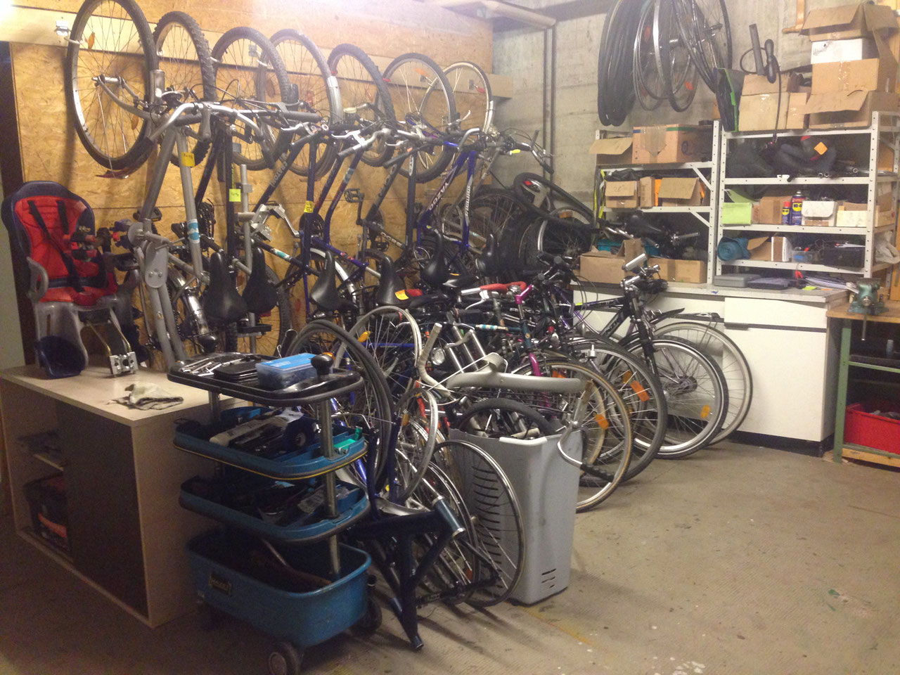

Fahrradwerkstatt

mit Geflüchteten – aber nicht nur für Geflüchtete
Im Maximilian Kolbe Haus (Buchhain 33) im Ortsteil Schelmenholz befindet sich unsere Fahrradwerkstatt. Dort verteilen wir Fahrräder (ca. 25€ Verwaltungs- und Reparaturpauschale - diese Pauschale variiert etwas je nach Qualität des Rades),führen gemeinsam Reparaturen durch und unterstützen auch die Beschaffung von Ersatzteilen.
Durch die gewonnene Mobilität wollen wir die Teilhabe von Bedürftigen und Geflüchteten an unserer Gesellschaft unterstützen und auch die Erreichbarkeit von Arbeitsplätzen erleichtern.
Aktuell suchen wir:
- weitere Mithelfer
-
Fahrradspenden
a) benötigt werden Räder für Herren, Damen und Kinder
b) Bitte vorher eine Beschreibung mailen! Wenn unser Lager voll ist, können wir leider nicht jedes Fahrrad unterbringen, auch wenn wir das gerne würden. Bei Rädern die gar keine oder nur wenig Reparatur bedürfen (z.B. platten Reifen beheben) können wir evt. dir Räder auch direkt an die „Rad-Suchenden“ vermitteln...
c) Lichtanlagen, Dynamos, anderes Zubehör
d) Werkzeug
Aktuelle Öffnungszeiten:
Die Termine sind mit den „Öffnungszeiten“ des RepairCafes Winnenden gekoppelt.
Diese sind - mit Ausnahmen - normalerweise immer jeden zweiten Samstag im Monat von 10 - 13 Uhr.
Die exakten Termine (auch die Ausnahmen) können über diesen Link „ Termine “ eingesehen werden.
Es sind aber auch Termine nach Absprache möglich.
Bitte dazu diese Email-Adresse nutzen.
Kontakt:
Rad-Werkstatt@freundeleuwi.org
Über Spenden, ehrenamtliche Fahrrad-Tüftler und euren Besuch in der Werkstatt freuen wir uns natürlich!
Öffnungszeiten für 2026

Gerne dürfen auch alle anderen Menschen, für die eine reguläre Fahrradreparatur das Budget sprengt bei uns vorbei kommen.
Ob ihr darauf Anspruch habt?
Das wisst nur ihr selbst!
Schreibt uns einfach...